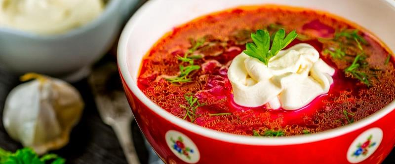

приготовление:
-
Заранее запечь при 200 °C 3 крупные или 4 средние свёклы. Средние свёклы запекать примерно 1 час — 1 час 10 минут, крупные — примерно 1,5 часа. Дать остыть. Запечённую свёклу можно хранить в холодильнике до приготовления борща.
-
Налить в кастрюлю 2 л воды и довести до кипения.
-
Очистить и нарезать 1 крупную луковицу и 1–2 моркови. Обжарить на сковороде с небольшим количеством растительного масла до лёгкой золотистости.
-
Пока овощи обжариваются, мелко нашинковать 1/2 небольшой или 1/4 средней белокочанной капусты и добавить в кипящую воду.
-
Помыть и очистить 1 сладкий перец, нарезать и добавить к луку и моркови. Обжаривать всё вместе ещё несколько минут.
-
Очистить 4 средние картофелины, нарезать кубиками и добавить в кастрюлю к капусте. С этого момента варить овощи 20 минут.
-
Переложить зажарку из лука, моркови и перца в суп.
-
Очистить запечённую свёклу и натереть на крупной тёрке. Разогреть в сковороде небольшое количество растительного масла, добавить свёклу и 2 ст. л. томатной пасты. Перемешать и обжаривать 2–3 минуты. Добавить сок 1/2 лимона, перемешать и переложить свёклу в суп.
-
Мелко нарезать 1 средний помидор, обжарить на достаточно сильном огне в небольшом количестве растительного масла в течение 2 минут и добавить в суп.
-
Через 20 минут после добавления картофеля проверить готовность картофеля и капусты. Добавить сухую аджику, посолить и поперчить. Если овощи готовы, выключить огонь.
-
Выдавить в борщ 2–3 зубчика чеснока, добавить нарезанную петрушку и/или укроп, перемешать и дать настояться 5–10 минут.
-
Подавать со сметаной.